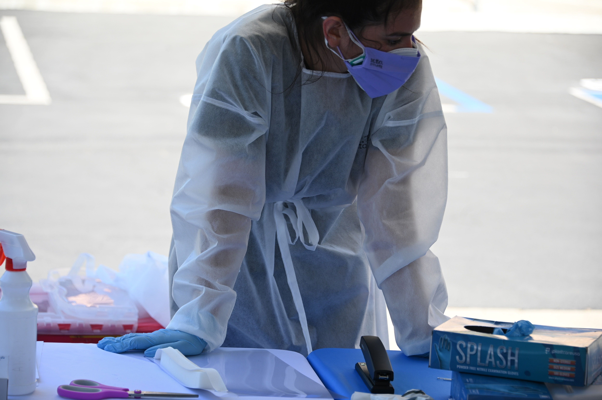

Doctors: Trump is wrong to accuse medical professionals of profiting from diagnosing COVID-19
Dr. Shikha Jain, Dr. Olaoluwa Fayanju, Dr.Joseph V. Sakran, Dr. Vineet Arora, Dr. Ali Khan,
Opinion contributors
As the United States hit its highest daily number of coronavirus cases since the pandemic began, the president found a new target of his constant redirection of responsibility for the COVID-19 pandemic: America’s doctors.
On the night of October 24th, President Trump addressed his supporters at a Wisconsin rally, located just minutes from a temporary COVID-19 field hospital, making the argument that doctors at the pandemic’s front lines are falsely capturing COVID-19 cases in order to profit from the pandemic.Undermining his own scientific experts was not enough to dispute the severity of the crisis.Now, he desperately suggests — 'I don’t know, some people say…' — that America’s most trusted professionals are fabricating the rising coronavirus case numbers of the current 'third spike' for personal financial gain.
As doctors we are outraged by Trump’s gutless insinuations.We’re not alone.The American Medical Association, American College of Physicians, and the Council of Medical Specialty Societies, leveraging the voices of over 800,000 American physicians, have each castigated Trump for his callous allegations.
The mere implication that health care professionals would be incentivized by profit to alter the true rate of this public health pandemic is reprehensible.Here’s why:
We struggle to contain the losses — and we continue to lose our own.For months, we have worked tirelessly to contain the spread of COVID-19.As we approach a quarter of a million deaths nationwide, we cannot forget the 1,700 of our own health care colleagues among that number.We are the teams that care for everyone, day and night, as we risk our own lives for the benefit of our communities.Unsurprisingly, we are burnt out.These last seven months have been a marathon in resilience, frustration, and fear.
Here’s the truth: We label patients with COVID-19 because accurate identification of this disease is essential so we can track cases to take the quick action necessary to prevent further spread.If a patient has a history of heart disease or other medical problems, and dies in the hospital with COVID-19, we know that coronavirus exacerbated that underlying condition — and their demise.It is accurate and in line with public health principles to list it as a cause of death.
We face historic furloughs, layoffs and pay cuts.
Here’s what’s worse: the assertions that doctors are profiting off of the pandemic are completely baseless and could not be further from the truth.Physician practices are not immune to the economic losses Americans are experiencing.One in five American physicians, whether salaried or in independent practice, have experienced pay cuts during the pandemic.Hospitals and physician practices have had to implementfurloughs and layoffs to stay afloat, including furloughs at 35% of all primary care offices.More than 16,000 — or 9% — of independent physician practices have had to close entirely.
More recent estimates suggest that hospitals, thanks to the loss of elective surgeries during pandemic spikes, will face over $300 billion in lost revenue this year alone.And this is all happening while physicians report working more hours this year — amid more uncertainty about the future of their profession.
We still work in unsafe conditions, without the equipment needed to protect us — and you.In the spring, the images were indelible: N95 masks being reused for days on end, while nurses were covered in trash bags as a proxy for PPE.Across the country, hospitals, clinics and state agencies bid against each other for what few PPE supplies existed.All the while, President Trump accused health care workers of hoarding PPE and other medical equipment.He blamed health care workers for shortages across the nation, when the root cause of that unfolding tragedy was his administration’s unwillingness to enact a national and comprehensive strategy.
Fast forward to today, where many healthcare workers still do not have adequate PPE and continue to reuse masks, gowns and gloves meant for one-time use.This could have been easily addressed by now, had President Trump fully activated the Defense Production Act to speed up and nationalize PPE production, a request he consistently refused.
We see no end in sight.White House Chief of Staff Mark Meadows made it clear: the Trump administration has given up trying to control this pandemic.While they wave the white flag in hopes of therapeutics and vaccines becoming available in sufficient quantities for all Americans, hundreds of thousands more are projected to die.
The new 'medical swamp' narrative emerging from the White House, while deeply disturbing, is not out of character for this administration.Since the first U.S. coronavirus case was reported in January 2020, the president has undermined his own health experts and denied the scientific evidence at every turn.
The coming weeks and months will be dark as we continue to experience the repercussions of Trump’s callous inaction, but you have the ability to shape how this story ends.We urge all Americans to elect leadership that is morally responsible, unwilling to allow the political manipulation of science.The lives of the American people depend on it.
Dr. Shikha Jain is an oncologist in Chicago.Twitter: @ShikhaJainMD Dr. Olaoluwa Fayanju is a family physician in Cleveland.Twitter: @ofayanju Dr.Joseph V. Sakran, is director of emergency general surgery and a trauma surgeon at Johns Hopkins Hospital.Twitter: @JosephSakran Dr. Vineet Arora is a hospitalist in Illinois.Twitter: @FutureDocs Dr. Ali Khan, M.D., is a general internist in Chicago.Twitter: @alikhan28 The views expressed in this article are the authors' own and do not necessarily reflect the official opinions of the institutions at which they work.
Posted On: 2020-10-27T14:55:00

Content Date: 2020-10-27
Download Date: 2021-05-30
Document ID: L0C04CQG3